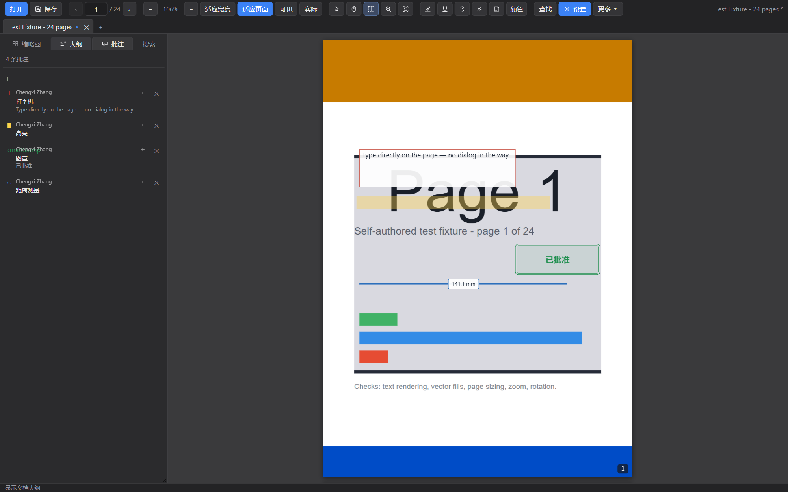

阅读
像一个阅读器那样快
- 连续、单页、对开、连续对开四种视图
- 页面虚拟化：只渲染视口附近的页面，两百页和两页一样快
- 实际大小、适合宽度、适合页面、适合可见区域、缩放到指定比例
- 放大镜跟随指针，图案直接取自渲染好的页面
- 打印：页范围、缩放、方向；视图历史用 Alt+← / →
打开快、标注真的存进文件、页面能改。没有安装程序，不需要联网，也不上传你的文档。
连续滚动与页面虚拟化、完整重写 PDF 的页面编辑、11 种标记与图形批注、6 种标准图章、批注回复、注释展平与总括、跨文件夹搜索。界面代码与 PDF 写入器都是自己写的。

不是功能清单的堆砌：每一块都有对应的实现深度和回归测试，也都在打包后的应用里验证过。
阅读交给 pdf.js（Apache-2.0），外壳是 Electron。但「把批注写进文件」和「改页面」这两件事，没有现成组件能用，是从字节开始实现的。
追加新对象、重写加了批注的那几页、末尾再补一段带 /Prev 的交叉引用。原始字节一个不改，所以别家阅读器看不出异常，文件被截断也不会坏。
% appended by this application 63 0 obj << /Type /Annot /Subtype /FreeText /Rect [90 652 330 722] /P 5 0 R /Contents <feff8fd94e005bb9758476846539> /PLP << /V 1 /K /textbox >> >> endobj startxref 21328 % previous section is chained through /Prev
删页、换序、合并不能靠追加完成，所以另有一条整份重写路径：把页树拍平、继承来的 MediaBox 和 Resources 物化到每一页、所有对象搬过去重新编号，再算出一份新的交叉引用。旧对象成了孤儿，合法且无害。
// merging is the only cross-graph copy in the codebase for (const num of extraDoc.objectNumbers()) { map.set(num, next++); // old → new } // every reference inside the incoming document is renumbered, // or it would point at whatever the host keeps at that number
功能写完不算完：构建要过，浏览器里要真的点一遍，打包后的应用里还要再点一遍。这套流程抓出过不少只有真跑一遍才会现形的问题。
npm test — 28 个套件、731 项断言，0 失败npm run test:desktop — 打包后的应用里 26 + 21 + 8 项断言npm run build — 类型检查与构建，CI 里每次都跑写在这里，是因为把边界说清楚比把功能说满更有用。